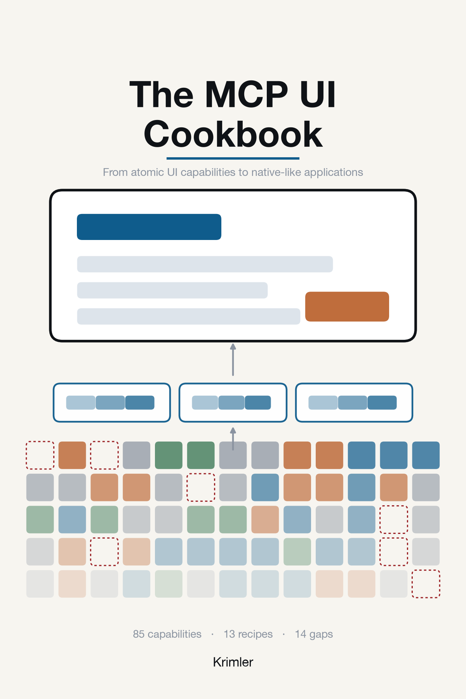

The MCP UI Cookbook
From atomic UI capabilities to native-like applications
An MCP application is a sandboxed iframe that speaks JSON-RPC to a host it does not trust, on behalf of a user it can see and a model it cannot. This book takes that surface apart: 87 atomic capabilities, the components they compose into, 13 application recipes that put them under load, and a conformance suite that decides whether a host really supports what it claims.
Every capability entry says where its behaviour comes from: 28 are messages in the MCP Apps extension, 4 come from core MCP, 20 are the browser inside the sandbox, 19 are yours to build, and 16 have no standard mechanism at all. The last group is the most interesting part of the book.
Pinned to core protocol 2026-07-28, the MCP
Apps extension io.modelcontextprotocol/ui, and SDK
1.7.5. The applications on these pages are
running, not recorded. Repository.